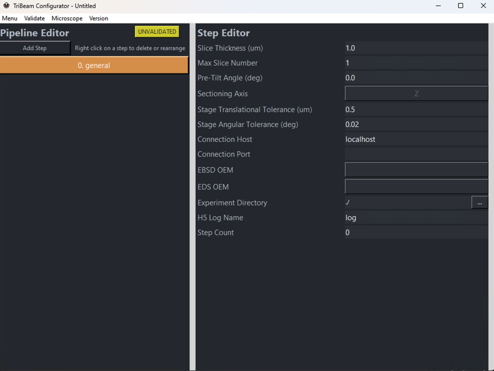

Introduction
pytribeam provides tools for automated acquisition of data on the TriBeam scanning electron microscope using Thermo Fisher Scientific's autoscript API, which provides a python interface for microscope interactions. pytribeam is geared specifically for 3D data collection with the use of an integrated femtosecond laser, but offers many higher-level functionalities applicable to single SEM or dual-beam SEM/FIB (both Gallium and Xenon Plasma) platforms utilizing autoscript.
Utilization of this tool does not require advanced experience with python, but it is generally expected that users will be experienced in the use and operation of the microscope platform and understand the various steps required to create workflows for automated data collection. This package assumes users are able to orient and place their sample at the eucentric position within the microscope, and are able to determine various machine settings (including, but not limited to, detector selection and settings, determination of milling geometries and settings, etc.) required for automated data collection.
Installation
This process uses AutoScript 4.8.1 and TriBeam_API_Python 2_2.1 provided by Thermo Fisher Scientific, which is a Windows-only configuration.
Pre-installation
-
Uninstall any prior installations of AutoScript
-
Follow the Autoscript installation instructions provided by Thermo Fisher Scientific
-
With
AutoScript_4.8.1.exe, install Autoscript according to Thermo Fisher Scientific's instructions:- Section 5 - Procedure, select the appropriate scripting configuration. This codebase has been tested in both "Local" and "Offline" Scripting Configurations.
- Select Components screen
- AutoScript Client components
- We recommend not installing the following: PyCharm Community IDE, .NET API, preferring to use VS Code as an IDE
- AutoScript Client components
- Select Components screen
- Select the installer option to add Python to the system Path.
- Register to activate AutoScript license on this computer.
- Restart the computer.
- Section 5 - Procedure, select the appropriate scripting configuration. This codebase has been tested in both "Local" and "Offline" Scripting Configurations.
-
Follow the Laser Control installation instructions provided by Thermo Fisher Scientific
- Install iFast and Python APIs
The AutoScript installer installs the following modules (generated with pip freeze):
appdirs==1.4.4
argon2-cffi-bindings==21.2.0
argon2_cffi==21.3.0
attrs==21.2.0
autoscript-core @ file:///C:/Program%20Files/Thermo%20Scientific%20AutoScript/PythonPackages/autoscript_core-5.17.0-py3-none-any.whl
autoscript-sdb-microscope-client @ file:///C:/Program%20Files/Thermo%20Scientific%20AutoScript/PythonPackages/autoscript_sdb_microscope_client-4.8.1-py3-none-any.whl
autoscript-sdb-microscope-client-tests @ file:///C:/Program%20Files/Thermo%20Scientific%20AutoScript/PythonPackages/autoscript_sdb_microscope_client_tests-4.8.1-py3-none-any.whl
autoscript-toolkit @ file:///C:/Program%20Files/Thermo%20Scientific%20AutoScript/PythonPackages/autoscript_toolkit-4.8.1-py3-none-any.whl
backcall==0.2.0
bleach==4.1.0
build==0.7.0
ceres_solver==2.1.0
certifi==2021.5.30
cffi==1.14.6
charset-normalizer==2.0.3
colorama==0.4.6
configobj==5.1.0.dev0
cycler==0.11.0
Cython==0.29.33
decorator==5.1.0
defusedxml==0.7.1
docutils==0.17.1
entrypoints==0.4
fonttools==4.31.1
h5py==3.6.0
idna==3.1
imagecodecs==2022.2.22
imageio==2.16.2
importlib_metadata==4.11.4
intel_fortran_rt==2022.0.3
intel_openmp==2021.4.28
ipykernel==5.5.6
ipython==7.31.1
ipython-genutils==0.2.0
jedi==0.18.0
Jinja2==3.0.3
joblib==1.1.0
jsonschema==3.2.0
jupyter-client==6.1.12
jupyter-core==4.8.1
jupyterlab-pygments==0.1.2
kiwisolver==1.4.0
libaec==1.0.6
libbz2==1.0.8
libfreetype==2.12.1
libgflags==2.2.2
libglog==0.6.0
libharfbuzz==3.2.0
libhdf5==1.12.1
libicu==70.1
liblcms2==2.12
liblz4==1.9.3
liblzma==5.2.5
libopenjpeg==2.4.0.post1
libpng==1.6.37
libprotobuf==3.13.0
libqhull==8.0.2
libsodium==1.0.18
libtiff==4.3.0
libturbojpeg==2.1.2
libyaml==0.2.5
libz==1.2.11
libzmq==4.3.4
libzstd==1.5.0
Markdown==3.3.7
MarkupSafe==2.1.1
matplotlib==3.5.1
matplotlib-inline==0.1.6
mfc_runtime==14
mistune==0.8.4
mkl==2021.3.0
mkl-service==2.4.0
msvc_runtime==14
nbclient==0.5.12
nbconvert==6.4.2
nbformat==5.2.0
nest-asyncio==1.5.4
networkx==2.7.1
notebook==6.4.8
numexpr==2.8.1
numpy==1.21.2
opencv_python==4.6.0
packaging==22.0
pandas==1.3.2
pandocfilters==1.5.0
parso==0.8.2
pep517==0.9.1
pickleshare==0.7.5
Pillow-SIMD==9.0.0.post1
prometheus-client==0.13.1
prompt-toolkit==3.0.24
psutil==5.8.0
pycparser==2.20
Pygments==2.8.1
pyparsing==2.4.7
pyrsistent==0.15.3
PySide6==6.2.3
python-dateutil==2.8.2
pytz==2022.6
PyWavelets==1.3.0
pywin32==301
pywinpty==2.0.4
PyYAML==5.4.1
pyzmq==22.3.0
qtbase==6.2.3
qtconsole==5.3.0
qtdeclarative==6.2.3
qtmultimedia==6.2.3
QtPy==2.3.0
qtshadertools==6.2.3
qtsvg==6.2.3
qttools==6.2.3
requests==2.26.0
scikit-image==0.19.2
scikit-learn==1.0.2
scipy==1.8.0
Send2Trash==1.8.0
shiboken6==6.2.3
sip==6.5.1
six==1.16.0
terminado==0.13.2
testpath==0.5.0
thermoscientific-logging @ file:///C:/Program%20Files/Thermo%20Scientific%20AutoScript/PythonPackages/thermoscientific_logging-5.17.0-py3-none-any.whl
threadpoolctl==3.1.0
tifffile==2022.4.8
toml==0.10.2
tomli==2.0.1
toolz==0.11.1
tornado==6.1
traitlets==5.1.0
urllib3==1.26.3
wcwidth==0.2.5
webencodings==0.5.1
zipp==3.7.0
Confirm the installation location of Autoscript's python environment, which should default to the following path: C:/Program Files/Enthought/Python/envs/Autoscript/python.exe. You can verify this by running the following in the Command Prompt (cmd.exe):
where python
which should output something similar to the following:
C:\Program Files\Enthought\Python\envs\AutoScript\python.exe
Main Installation
Installation can be performed by running the provided batch file install.bat from the local directory where you want to install the package. This can be accomplished simply by double clicking on the install.bat file from the Windows Explorer. Options are provided for both client and developer (editable) use. This will install the wheels of various open-source python packages included with the package that are provided here: wheels. Wheels are provided in order to eliminate the need for internet connectivity on the microscope.
NOTE: Developer (editable) use provides the user with the ability to modify and expand the source code, such as adjusting default values in the constants module, which would be needed to run unit tests included in the package, as running of tests are tied to specific machine names provided in the constants module. Compiled unit test coverage for the package can be found for the latest release without installing as a developer here: test-coverage.
After running the install.bat script, confirm the package installation by opening a new terminal and run the following to list the available package commands:
pytribeam
which should generate the following output along with any relevant warning messages:
WARNING: Laser API not imported!
Laser control, as well as EBSD and EDS control are unavailable.
--------
pytribeam
--------
pytribeam
(this command)
pytribeam_info
Prints the module version and ThermoFisher Scientific Autoscript and Laser
API version requirements.
pytribeam_gui
Launches GUI for creating configuration .yml files and to control
experimental collection.
pytribeam_exp <path_to_file>.yml
Runs 3D data collection workflow based off of input .yml file.
Example:
path/to/experiment/directory> pytribeam_exp path/to/config/file.yml
Reference Frame Conventions
The general approach for 3D data collection adopted by this package is to use stage movements to ensure that the cut face is placed at the same relative distance to each beam regardless of the slice number. Therefore, when imaging the cut face, the electron beam working distance (distance between electron beam and image surface) should remain constant (fixed) over the course of the experiment. pytribeam provides automation to control stage movement throughout a serial-sectioning experiment to enable this expected beahvior.
To achieve the needed stage movements, a slice thickness and initial stage positions (for operations on the first slice) are requested from the user. All subsequent stage positions are calculated on the basis of these initial settings, so in order to ensure the cut face remains at the same working distance and location as the initial cut face, it is important to understand the reference frame conventions utilized by this package.
WARNING: Incorrect selections of sectioning_axis, and pre_tilt_deg in General Experiment Settings, or rotation_side in General Step Settings can result in acquisition with incorrect slice thicknesses and an apparent drift of the sample during data collection. This can result in loss of data or failed experiments.
Stage Axes
The TriBeam has a 5-axis stage, including 3 translational axes (X, Y, Z) and two angular axes (T, R). The X and Y axes move the sample in-plane around the chamber, while the Z axis brings the stage closer or further from the electron beam pole piece. The angular tilt axis (T) tilts the stage about the X-axis to access different imaging/milling geometries, and the angular rotation axis (R) rotates the sample about the Z-axis for various sample alignment operations.
All stage coordinates are tracked in Thermo Fisher Scientific's RAW coordinate system, which differs from that utilized in the xTUI. The most notable change for users familiar with normal SEM operation is that the positive Z-direction moves the sample stage toward the electron column pole piece, not the working-distance "Z-linked" convention direction where Z is measured as the distance between the sample and the electron beam pole piece.
When facing the front chamber door, with the FIB column to the left of the electron column and the laser (if installed) to the right of the electron column, the following axes conventions are utilized:
- the positive X (+X) direction is coming out of the front chamber door
- the positive Y (+Y) direction is to the right (toward the laser beam)
- the positive Z (+Z) direction is toward the electron column
- the positive T (+T) directions tilts the stage counterclockwise about the X axis
- the positive R (+R) direction rotates the sample clockwise about the Z axis
Ilustrations of these conventions follow below: Stage axes side view, as viewed standing in front of the TriBeam and facing the Front Chamber Door.
 Stage axes top down view, as viewed looking down (bird's eye view) onto the sample stage standing in front of the TriBeam and facing the Front Chamber Door.
Stage axes top down view, as viewed looking down (bird's eye view) onto the sample stage standing in front of the TriBeam and facing the Front Chamber Door.
Pre-tilt angles
In order to access the various geometries required for data collection with all the detectors in the TriBeam, from glancing-angle FIB milling to EBSD collection, a pre-tilted sample is generally required to remain within stage hardware limits. Correctly identifying the pre-tilt used for a TriBeam data acquisition experiment is critical to ensure that the cut face of the sample remains at a consistent working distance throughout the experiment.
In pytribeam, we adopt a pre-tilt convention that tends to differ from most FIB experimentalist conventions, which stems from the difference in milling geometries, namely between surface normal and surface parallel (also called glancing angle) milling. Conventional FIB milling is typically conducted using surface normal geometries, wherein the sample surface is oriented perpendicular to the incoming ion beam to allow the ion beam to effectively "drill" into the sample. However, milling for large volume 3D datasets in pytribeam adopts a surface parallel milling geometry, where the milled area (or cut face) is set up to be parallel to the incoming beam. In this orientation, only the leading edge of the beam (either laser or ion) interacts with the surface, which has numerous advantages. Pre-tilt angles are therefore measured in terms of glancing-angle geometries, and are therefore typically the complementary angle of the pre-tilt angle convention used by surface normal milling geometries, (i.e., ).
The pre-tilt angle for pytribeam of your sample can most readily be found by determining what angle the tilt (T) axis would need to be set to in order to enable surface parallel milling with the laser beam. As the laser beam is mounted with a offset from parallel with the electron beam in the TriBeam, it will cut into a completely flat sample (perpendicualrly oriented to the electron beam, typical for conventional electron imaging) at a tilt angle.
A sample without pre-tilt ( pre-tilt) would need to compensate for this cutting angle and need to be tilted to to have its top surface parallel with the incoming laser beam. If a user intends to use for their laser milling step, this would signify a pre-tilt of to align the top surface of the sample parallel to the laser beam during milling.
In general, the sum of the tilt angle to orient the top surface of the sample parallel to the laser beam and the pre-tilt angle should therefore be equal to :
WARNING: This second example utilizing a T axis position of for the laser milling step is generally considered to be a pretilt by FIB convention (the complementary angle of ), but will result in incorrect slice thicknesses and sample drift over time if used for a pytribeam experiment. The standard stub provided by Thermo Fisher for TriBeam datasets typically has a pretilt of either or depending on the orientation of the sample. When using pytribeam, please be sure to think of pre-tilt angles in terms of the above equation for glancing-angle milling of the sample.
Rotation Side
In order to maintain the sample's working distance and preserve its location in the original field of view throughout an experiment, a pre-tilted sample will generally require a combination of both Z and Y axis movements as material is removed. pytribeam includes automated stage movement routines that takes these corrections into account to adjust these axes accordingly. As serial-sectioning iteratively removes material, the change in the Z axis position will always be positive given the axis conventions described above. However, the direction of the Y axis movement will be determined based on the orientation of the sample and necessary adjustments due to limitations on stage tilt values. This behavior is captured with the rotation_side parameter included in stage positions for every step in a pytribeam workflow, which controls the sign of this movement. This parameter has 3 possible enumerations, including:
- FSL_MILL: correction for pre-tilted sample stage movement when the sample is rotated on the side of laser milling operations. Results in a correction along the negative Y direction.
- FIB_MILL: correction for pre-tilted sample stage movement when the sample is rotated on the side of ion milling operations. Results in a correction along the positive Y direction.
- EBEAM NORMAL: correction for pre-tilted sample stage movement when no pre-tilt adjustment is needed, a special case currently utilized only in custom scripts and not recommended for normal operations.
To explain the use of the normal operating modes, either FSL_MILL or FIB_MILL, the following example is provided for a sample utilizing a pre-tilt, and a slice thickness . The correct movement of the sample for subsequent slices can be determined using trigonometry as follows:
Laser milling step
For a laser milling step, the user should select FSL_MILL for the rotation_side step setting, which correctly adjusts the Y axis position along the negative direction for this operation.
In this step, the stage tilt will remain at as the pre-tilt angle is as discussed above. The sample surface forms the long leg of a 30-60-90 triangle, with the slice thickness (the movement of the sample from Slice to its previous location on Slice ) forming the short leg (black triangle). Using geometric properties of triangles, the Y and Z axis movements required to achieve the desired slice thickness can be decomposed into an additional inner 30-60-90 triangle (gray triangle) to calculate the absolute Y and Z axis moves required. For a slice thickness , the Z axis must move in the positive direction and the Y-axis must move in the negative direction. This is illustrated below, where we want to move the sample position at Slice n to the previous cutting location at Slice n-1:
 Geometric calculation of stage movements required to bring the sample surface to the fixed milling location, which involves moving the Y and Z axes to bring point Slice n to point Slice n-1. The Y axis must move by and the Z axis must move by for this operation.
Geometric calculation of stage movements required to bring the sample surface to the fixed milling location, which involves moving the Y and Z axes to bring point Slice n to point Slice n-1. The Y axis must move by and the Z axis must move by for this operation.
Electron imaging step (surface normal imaging)
For an electron imaging step, it may be advantageous to have the cut sample surface perpendicular to the electron beam to reduce distortions and the need for additional post-processing that arises from imaging of tilted sample surfaces. However, it may not be possible to achieve a sample tilt on the T axis necessary to achieve this orientation for the pretilted sample as described. Luckily, this geometry can still be achieved if the sample is first rotated by using the R axis. This will then enable the user to orient the cut sample surface perpendicular to the electron beam by tilting the stage T axis to to offset the pre-tilt.
As we have rotated the sample for this operation the user should select FIB_MILL for the rotation_side step setting, which correctly adjusts the Y axis position along the positive direction for this operation.
In this step, the rotation of the tilt axis T rotates the Z and Y axes as well, so we can use geometric properties of parallel lines and triangles to find the correct orientation of the 30-60-90 triangle in this case, with the slice thickness (the movement of the sample from Slice to its previous location on Slice ) forming the short leg (black triangle). Using geometric properties, the Y and Z axis movements required to achieve the desired slice thickness can be decomposed into an additional outer 30-60-90 triangle (gray triangle) to calculate the absolute Y and Z axis moves required. For a slice thickness , the Z axis must move in the positive direction and the Y-axis must move , now in the positive direction. This is illustrated below, where we want to move the sample position at Slice n to the previous cutting location at Slice n-1:
Geometric calculation of stage movements required to bring the sample surface to the fixed imaging location, which involves moving the Y and Z axes to bring point Slice n to point Slice n-1. The Y axis must move by and the Z axis must move by for this operation.
Note that the magnitude of the stage movement is the same for both axes for both the laser milling step and the electron imaging step, but that the sign of the Y axis movement is opposite due to the rotation of the stage. This is the critical functionality of the rotation_side parameter.
Imaging quadrants
pytribeam adopts the same imaging view (quad) convention as that of Thermo Fisher Scientific. When the xTUI screen is divdided into 4 quadrants of equal size, the quadrant will be in the top left corner, the quadrant in the top right corner, the quadrant in the bottom left corner, and the quadrant in the bottom right corner as illustrated below:

Image viewing quadrants as seen in xTUI.
Image Coordinate System
pytribeam supports the use of reduced area imaging for certain scan modes, specifically for the use of the auto contrast/brightness functionality. This area is specified with a scan width and scan height ranging from 0.0 to 1.0, with the origin (0,0) in the upper left corner, and the point (1,1) in the bottom right corner as in the following image:

Image cooridnate system as seen in xTUI.
Patterning Coordinate System
pytribeam supports the use of patterning for ion beam milling. The patterning coordinate system is defined with the origin as the center of the scan field of view, both horizontally and vertically with pattern centers defined in units of length around this origin point. Thus pattern centers can range from in the horizontal direction and in the vertical direction for the scan field of view. This is illustrated below:
Patterning cooridnate system as seen in xTUI.
Configuration File (.yml)
The following describes the creation and validation of a configuration file, which is expected to be in the .yml file format. Configuration files are separated into three main sections, namely:
-
config_file_version (float): The
.ymlfile format, a float. Specific functionality in thepytribeammodule is tied to different versions of configuration files. The most current.ymlfile version is1.0. -
general (dict): General settings applicable to the entire experiment, a dictionary. Details for individual keys can be found in General Settings.
-
steps (dict): Settings for all individual steps or operations of an experiment, a dictionary. Details for individual sub-dictionaries outlining a specific step type can be found in Step Settings.
Notes on configuration file parameters
-
Various parameters rely on default constants (both ranges and specific values), some of which can be adjusted by the user in the configuration file, but most of which are defined in the
constantsmodule. Variables defined in theconstantsmodule can only be modified if the user installs thepytribeampackage in an editable format (see Installation for more details) and adjusts the default values before using the package. -
Some parameters are optional or may need to be left blank to avoid conflicting with other settings. In these cases, users may opt not to provide an entry for the parameter. This can be achieved by leaving the entry blank or by entering the
NoneTypevalue for.ymlfiles, which should be entered as the stringnull. -
At the beginning of an experiment, all parameters are processed through a validator to catch obvious issues or errors with configuration file parameters. Although this cannot catch all possible invalid configuration file parameters, a description of issues is provided where possible to help resolve these validation errors. This validator can also be accessed directly in the GUI prior to running an experiment (see GUI for details on use).
The subsequent sections detail individual settings for both the general and steps dictionaries.
General Settings
-
slice_thickness_um (float): The sectioning slice thickness in micron units, a float. This parameter controls stage movements, and should generally be larger than the observed stage repeatability. Limits are enforced from the slice_thickness_limit_um variable in the
constantsmodule, which defaults to an inclusive range of 0.0 to 30.0 microns. Slice thicknesses greater than or equal to 2.0 microns are recommended depending on stage precision and accuracy. Slice thicknesses larger than 30.0 microns are not recommended due to the laser spot size, but these can be achieved using multiple thinner laser milling operations in conjunction with the frequency parameter (see General Step Settings) to intermittently perform any imaging or other data collection step. -
max_slice_num (int): The number of slices to collect in the experiemnt, an integer. This parameter must be greater than 0.
-
pre_tilt_deg (float): The pre-tilt angle of the specimen in degree units, a float. This controls compound stage movements to ensure pre-tilted specimens move toward the respective beam (electron, ion, or laser) correctly. To correctly identify the pre_tilt_deg for your specimen, please consult Reference Frame Conventions for examples and a more detailed description of the conventions adopted in this tool. For a sectioning_axis of Z, limits are enforced by the pre_tilt_limit_deg_generic variable in the
constantsmodule, which defaults to an inclusive range of -60.0 to 60.0 degrees. For all other sectioning_axis values, pre_tilt_deg is enforced by the pre_tilt_limit_deg_non_Z_sectioning variable in theconstantsmodule, which defaults to a pre_tilt_deg of 0.0 degrees only. -
sectioning_axis (str): The sectioning direction used to calculate stage movements, a string which must be a member of the SectioningAxis enum in the
typesmodule. Please consult Reference Frame Conventions for examples and a more detailed description of the conventions adopted in this tool to understand the signs of these directions. The available enumeration values are:- X+: sectioning along the positive x-axis
- X-: sectioning along the negative x-axis
- Y+: sectioning along the positive y-axis
- Y-: sectioning along the negative y-axis
- Z: sectioning along the positive z-axis
NOTE: Only a sectioning_axis of Z is currently supported. Future updates will target this additional functionality.
-
stage_translation_tol_um (float): The allowable tolerance for translation stages (X, Y, and Z axes), in micron units. During requested stage movements, requests to individual translation axes for movement will only be sent if the target position is further than this value from the current axis position. A default value of 0.5 micron is included in the
constantsmodule, but this default will be overwritten by the user-provided value in the configuration file. This value should be significantly smaller than the slice_thickness_um to minimize slice thickness variation throughout an experiment. -
stage_angular_tol_deg (float): The allowable tolerance for angular stages (R and T axes), in degree units. During requested stage movements, requests to individual angular axes for movement will only be sent if the target position is further than this value from the current axis position. A default value of 0.02 degrees is included in the
constantsmodule, but this default will be overwritten by the user-provided value in the configuration file. -
connection_host (str): The host server or IP address to connect to the microscope, a string. The value of this variable is system-dependent and is related to the setup configuration utilized while installing the
autoscriptsoftware from Thermo Fisher Scientific. Examples includelocalhostand196.168.0.1. This connection, along with the provided connection_port will be tested during.ymlvalidation. -
connection_port (int): The port on the connection_host with which to initialize the microscope connection, an integer and optional parameter. If no connection_port is needed, leave this entry blank or enter the the
NoneTypekeyword in the.yml(null). -
EBSD_OEM (str): The original equipment manufacturer (OEM) of the EBSD detector used in the system, a string which must be a member of the ExternalDeviceOEM enum in the
typesmodule. If no OEM is provided, control over the EBSD detector will not be enabled during data collection. If EDS is also enabled in this experiment, the values must match, but EDS can be disabled by providing theNoneTypekeyword in the.yml(null). The available enumeration values are:- Oxford: Oxford Instruments detector
- EDAX: EDAX detector
None: Enter the keywordnullor leave the entry blank in the .yml file. This will disable EDS detector control for the experiment.
-
EDS_OEM (str): The original equipment manufacturer (OEM) of the EDS detector used in the system, a string which must be a member of the ExternalDeviceOEM enum in the
typesmodule. If no OEM is provided, control over the EDS detector will not be enabled during data collection. If EBSD is also enabled in this experiment, the values must match, but EBSD can be disabled by providing theNoneTypekeyword in the.yml(null). The available enumeration values are:- Oxford: Oxford Instruments detector
- EDAX: EDAX detector
None: Enter the keywordnullor leave the entry blank in the .yml file. This will disable EDS detector control for the experiment.
-
exp_dir (str): Experimental directory to store the log file and any images captured by the microscope, a string. The specific directory does not need to exist and will be automatically generated at the start of the experiment, but a valid creatable path must be provided (e.g.
exp_dir = "C:/path/to/experimental/directory"). As EBSD and EDS data is generally collected on a separate machine and specific map settings must be preset by the user (see EBSD and EDS Settings for details on external device integration), these data will not be automatically included in the experimental directory, are likely to not be stored on the same machine, and may have unqiue file naming conventions that do not correspond with those handled directly by thepytribeampackage. -
h5_log_name (str): Filename for the log file that automatically stores various state information during data collection, a string. Log files are saved in the
.h5HDF (Hierarchical Data Format) extension. The suffix.h5is automatically added to the end of the user-provided value (if needed), so an entry ofh5_log_nameorh5_log_name.h5will result in the creation of the same log file (h5_log_name.h5) within the experimental directory. -
step_count (int): The number of steps in the experiment, an integer. Used to validate the configuration file. Must be greater than zero and be equal to the number of steps contained in the steps section of the
.ymlsettings as described in Step Settings. This value should auto-update when using the GUI.
Step Settings
Configuration files contain a list of all the individual operations that form the data acquisition pipeline. These comprise one of the root level elements of the .yml file called steps:.
Each step is designated as a nested mapping with the highest-level nesting designating the name of the step. For each step, these settings are broken down further into lower level nested mappings. All steps must contain a step_general nested mapping that contains information applicable to all step types. Depending on the specific step type, other unique nested mappings at the same level of step_general key-value pairs will be required. The following subsections provide more detailed information on these nested mappings, namely:
-
Step General: Step settings applicable to all step types, including stage position and frequency settings.
-
Image: Step settings to take images with the electron or ion beams.
-
Laser: Step settings to perform patterning/milling with the femtosecond laser beam.
-
FIB: Step settings to perform patterning/milling with the focused ion beam.
-
EBSD and EDS: Step settings to collect EBSD, EDS, or EBSD with concurrent (combined) EDS data.
-
Custom: Step settings to run a custom script as an operation. Recommended for advanced users only.
Step General Settings
General settings required for each step, independent of the specific step type.
-
step_type (str): The type of operation to be completed, a string which must be a member of the StepType enum in the
typesmodule. The available enumerations are-
image: A step to collect a micrograph with either the electron or ion beams.
-
laser: A step to ablate material with the femtosecond laser.
-
fib: A step to mill material with the ion beam, will also collect an image of the surface.
-
ebsd: A step to initiate an EBSD scan that has been preset by the user on the EBSD-controlled computer. Users must utilize a EBSD OEM supported by Thermo Fisher to utilize this functionality.
-
eds: A step to initiate an EDS scan that has been preset by the user on the EBSD-controlled computer. Users must utilize a EDS OEM supported by Thermo Fisher to utilize this functionality.
-
custom: A step to run a custom script as a subprocess.
-
-
step_number (int): The total number of steps in the experiment, an integer. This parameter must be greater than 0.
-
frequency (int): How often to perform a specific step, an integer. For some frequency , the step will be performed every slice. Useful for intermittent collection of some data types that can take longer to collect, such as EDS. This parameter must be greater than 0, and a frequency of 1 will perform this step on every slice.
stage
Information on location of the stage and how the stage should be moved.
-
rotation_side (str): The side on the R axis on which the step should be completed, a string which must be a member of the RotationSide enum in the
typesmodule. Primarily controls how the Y axis will move (positive or negative direction) when the sample is pretilted. More details can be found here. The available enumerations are- fsl_mill: Typically used for laser machining and EBSD operations.
- fib_mill: Typically used for FIB milling and imaging operations.
- ebeam_normal: A special case currently utilized only in custom scripts. Not recommended for normal operations.
initial_position
The starting position of the step on the first slice, taken in Thermo Fisher Scientific's RAW Stage Coordinate system. For details on this, click here.
-
x_mm (float): The starting RAW position of the X axis in units of millimeters, a float.
-
y_mm (float): The starting RAW position of the Y axis in units of millimeters, a float.
-
z_mm (float): The starting RAW position of the Z axis in units of millimeters, a float.
-
t_deg (float): The starting RAW position of the T axis in units of degrees, a float.
-
r_deg (float): The starting RAW position of the R axis in units of degrees, a float.
Image Step Settings
Specific settings for an image type step, which provides options for setting many of the relevant imaging parameters for the beam used (voltage, current, etc.), the detector (type, mode, etc.), and the scan (resolution, dwell, etc.). For any imaging step, the image will be saved in folder sharing the name of the step (highest level of the dictionary contained with the steps: key) within the experimental directory variable (exp_dir) specified in the General Settings dictionary.
- bit_depth (int): The bit depth of the saved imaged, an integer. Must be a member of the ColorDepth enum in the
typesmodule. Only 8 or 16 bit depths are supported, and images with custom resolutions (i.e not a PRESET, resolution, see here for more details) will automatically be saved at a bit depth of 8. 8-bit images have a grayscale color range of 0-255 (), while 16-bit images have a grayscale color range of 0-65,535 ().
beam
Various settings to control the imaging beam to save a micrograph.
-
type (str): The type of beam used to take the image, a string. Must be one of the enumerated BeamType values defined in the 1types` module. The supported enum values are:
- electron: The electron beam.
- ion: The ion beam. If a FIB step type is selected, the imaging beam must be an ion beam type.
-
voltage_kv (float): The accelerating voltage of the beam in kiloVolts, a float.
-
voltage_tol_kv (float): The allowed tolerance on the measured beam voltage that will trigger a call to adjust the voltage. An absolute value in kiloVolts, a float. If the requested beam voltage is 20.0 kV with a voltage tolerance of 0.5 kV, the system will attempt to adjust the beam voltage if the measured beam voltage is less than 19.5 kV or greater than 20.5 kV.
-
current_na (float): The current of the beam in nanoAmps, a float.
-
current_tol_na (float): The allowed tolerance on the measured beam current that will trigger a call to adjust the amperage. An absolute value in nanoAmps, a float. If the requested beam voltage is 15.0 nA with a current tolerance of 1.0 nA, the system will attempt to adjust the beam current if the measured beam current is less than 14.0 nA or greater than 16.0 nA.
-
hfw_mm (float): The horizontal field width view of the scan field in units of millimeters, a float. This directly controls the magnification of the beam.
-
working_dist_mm (float): The working distance in units of millimeters, a float. This directly controls the focus of the beam, with an in-focus image working distance measuring the distance from the pole piece to the sample surface being imaged.
-
dynamic_focus (bool): A flag whether or not to utilize dynamic focus, a boolean value of either
TrueorFalse. Dynamic focus is typically used in concert with a correctly set sample tilt angle to dynamically adjust the working distance of the beam as the beam scans from the top to the bottom of the image. Dynamic focus cannot be used for ion imaging and only works for a scan_rotation (see here) of 0 degrees. -
tilt_correction (bool): A flag whether or not to utilize tilt correction, a boolean value of either
TrueorFalse. Tilt correction is typically used in concert with a correctly set sample tilt angle to adjust the spacing of the vertical scan controller to remove linear distortions of a tilted plane, which may appear foreshortened relative to imaging beam. Tilt correction cannot be used for ion imaging and only works for a scan_rotation (see here) of 0 degrees.
detector
Various settings to control the imaging detector to save a micrograph.
-
type (str): The type of detector used to collect the image, a string. Must be an enumerated value in theDetectorType class defined in the
typesmodule, which contains all possible supported detector types, some of which may not be available on your system. Some examples of common detector types that are supported include:- ABS: annular backscatter detector, an insertable device.
- CBS: concentric backscatter detector, an insertable device.
- ETD: Everhart Thornley detector
- ICE: Ion conversion and electron detector
- TLD: Through Lens Detector
-
mode (str): The mode of the detector used to collect the image, a string. Must be an enumerated value in the DetectorMode class defined in the
typesmodule, which contains all possible supported detector modes, some of which may not be available on your system and are specific to individual detector types. Some examples of common detector modes that are supported on the ETD detector include:- SecondaryElectrons: secondary electrons
- BackscatterElectrons: backscattered electrons
-
brightness (float): The brightness of the active detector, a float from 0.0 to 1.0. Controls the voltage offset of the detector. Manually sets the brightness and cannot be combined with the auto contrast/brightness (auto_cb) functionality.
-
contrast (float): The contrast of the active detector, a float from 0.0 to 1.0. Controls the electronic gain of the detector. Manually sets the contrast and cannot be combined with the auto contrast/brightness (auto_cb) functionality.
auto_cb
Settings to utilize the auto contrast/brightness adjustment of the active detector. Sets the active region (or sub_region) of the active imaging quadrant in which to perform the automated routine. Future releases may provide additional functionlity to adjust the auto contrast/brightness routine. For details on the sub_region coordinate system, see here. The specific settings for the auto_cb operaton are:
- left (float): The position of the left edge of the region of interest, a float from 0.0 to 1.0, with 0.0 representing the left edge of the image and 1.0 representing the right edge of the image.
- width (float): The width of the rectangle starting from the left edge of the box. The sum of left + width must be less than or equal to 1.0.
- top (float): The position of the top edge of the region of interest, a float from 0.0 to 1.0, with 0.0 representing the top edge of the image and 1.0 representing the bottom edge of the image.
- height (float): The height of the rectangle starting from the top* edge of the box. The sum of top + height must be less than or equal to 1.0.
scan
Various settings to control the scan settings to save a micrograph. The time to collect an image can be roughly calculated by multiplying the dwell time by the number of pixels as determined by the resolution of the image. For example, using a preset resolution of 6144x4096 with a 3 microsecond dwell time will take roughly 75.5 seconds to collect.
-
rotation_deg (float): The rotation of the scan field in degrees, a float. Non-zero values of rotation_deg cannot be used in combination with tilt_correction and dynamic_focus settings (see above).
-
dwell_time_us (float): The time the beam should dwell at each pixel in the scan field, in units of microseconds, a float. Must be a positive, non-zero value within the dwell time limits of the tool.
-
resolution (str): The resolution of the image to be collected, a string in the form of WIDTHxHEIGHT. Many preset resolutions (mostly with 3:2 aspect ratios) are supported, including:
- 512x442
- 768x512
- 1024x884
- 1536x1024
- 2048x1768
- 3072x2048
- 4096x3536
- 6144x4096
Custom resolutions from 12 up to 65,535 pixels on edge are also supported, but care should be taken to account for potential lensing distortions and sample drift when collecting large numbers of pixels across large fields of view, which can take several minutes to collect. Custom (non-preset) resolutions can also only be saved to images of 8-bit colordepth (grayscale values of 0-255).
Laser Step Settings
Specific settings for a laser type step, which provides options for setting many of the relevant patterning parameters for machining with the femtosecond laser beam.
- objective_position_mm (float): Position of the objective in the laser injection port, in millimeters, a float. Used to control the position of the focal point of the laser beam. Good settings for this can be determined from calibrating the laser beam. Both the 1030 nm and 515 nm wavelength beams will tend to have slightly different optimal positions for milling. Various additional properties of the objective position are controlledin the
constantsmodule, including:- An absolute position tolerance of 0.005 millimeters is used to determine whether or not a requested objective position movement was sucessful.
- A safe retracted position is set to 2.5 millimeters.
- Objective positions limits are set to between 2.0 and 29.0 millimeters (inclusive).
pulse
Various settings to control the laser pulse used for patterning.
-
wavelength_nm (int): The wavelength of laser light, must be one of the enumerated types specified in the
typesmodule, an integer. The two wavelengths are achieved with or without the use of second-harmonic generation (frequency doubling), which converts the native 1030 nm wavelength light to 515 nm.- 515: 515 nm light achieved via second-harmonic generation. Generally better for finer polishing with the laser.
- 1030: 1030 nm native light from the fiber laser. Generally better for large scale removal of material and/or rough cutting.
-
divider (int): Ratio of generated pulses to deliver to the sample surface, an integer. A pulse divider of 1 will deliver all pulses to the sample surface, a divdier of 2 will deliver every pulse, a divider of n will deliver every pulse to the surface. Higher pulse dividers can be useful for more beam sensitive materials.
-
energy_uj (float): The energy of an individual pulse, in microJoules, a float. To protect the various optics used to deliver the laser to the chamber, maximum pulse energy values may differ for changing values of pulse_divider.
-
polarization (str): The polarization of the laser light, as controlled by a flipper polarizer configuration. NOTE Polarization mode can be set, but currently there is no way to verify the current active polarization via the laser API. Must be an enumerated member of the LaserPolarziation class in the
typesmodule. Currently supported values include:- vertical: Vertically polarized light
- horizontal: Horizontatlly polarized light.
beam_shift
The beam shift to apply to the laser beam in addition to what is already present in the manual shift in Thermo Fisher Scientific's Laser Control GUI. If you plan to switch laser wavelengths during an experiment and need to apply different beam shifts for each wavelength of light, be sure to set the beam shifts to 0.0 micron in Thermo Fisher Scientific's Laser Control GUI and instead input the determined shifts here for each laser step.
-
x_um (float): The beam shift along the x-direction in microns, a float.
-
y_um (float): The beam shift along the y-direction in microns, a float.
pattern
Various settings to control the laser pattern used for machining.
-
rotation_deg (float): The rotation of the entire pattern in degrees, a float.
-
mode (str):
- fine: Fine patterning mode, generally better for polishing of surfaces. Requires a value for the pulses_per_pixel parameter.
- coarse: Coarse patterning mode, generally better for rough cutting or removal of large amounts of material. Requires a value for the pixel_dwell parameter.
-
pulses_per_pixel (int): Number of pulses to put down at each pixel location in the pattern, a positive, non-zero integer. Locations are determined by the pattern size and pitch. Can only be used with fine patterning mode.
-
pixel_dwell_ms (float): Time to dwell at each pixel location in the pattern, a positive, non-zero float. Locations are determined by the pattern size and pitch. Can only be used with coarse patterning mode.
type
Various settings for the geometry and shape of the pattern. Must be a valid enumerated value in the LaserPatternType class defined in the types module. Currently supported pattern types include:
- box
- line
-
box: A box pattern type requiring the following parameters:
-
passes (int): The number of times to repeat the entire pattern, a non-zero, positive integer.
-
size_x_um (float): The size of the pattern along the x-direction (width) in microns, a float.
-
size_y_um (float): The size of the pattern along the y-direction (height) in microns, a float.
-
pitch_x_um (float): The spacing of adjacent pixels along the x-direction in microns, a float. Controls the spacing of columns of points in the pattern.
-
pitch_y_um (float): The spacing of adjacent pixels along the y-direction in microns, a float. Controls the spacing of rows of points in the pattern.
-
scan_type (str): Controls the sequence of points scanned in combination with the coordinate_ref parameter. Must be a member of the LaserScanType enum class defined in the
typesmodule. Currently supported values for box patterns include:- serpentine: Pattern will be executed from left to right on the first and all other odd-numbered rows, and from right to left on the second and all other even-numbered rows, creating a serpentine, or snake scan pattern.
- raster: Pattern will be executed from left to right on every row, mimicking how an electron beam image is typically captured.
-
coorindate_ref (str): Defines the origin of box for positioning the pattern relative to the applied beam shift.
- center: box will be drawn around the currently applied beam shift position, centering it evenly in both x- and y-directions.
- uppercenter: box will be drawn vertically down from the currently applied beam shift position, but centered along the x-direction. The typically preferred coordinate_ref value for most 3D datasets.
- upperleft: box will be drawn using the currently applied beam shift position as the top left corner of the pattern.
-
-
line: A box pattern type requiring the following parameters:
-
passes (int): The number of times to repeat the entire pattern, a non-zero, positive integer.
-
size_um (float): The size of the pattern in microns, a float.
-
pitch_um (float): The spacing of adjacent pixels in microns, a float.
-
scan_type (str): Controls the sequence of points scanned. Must be a member of the LaserScanType enum class defined in the
typesmodule. Currently supported values for line patterns include:- single: Every pass starts at the beginning of the pattern and ends at the end of the pattern, repeating the pattern in the same direction. The 1-D equivalent of the raster scan_type for box patterns.
- lap: Every subsequent pass reverses the direction of the previous pass. The 1-D equivalent of the serpentine scan_type for box patterns.
-
FIB Step Settings
Specific settings for a FIB type step, which provides options for milling with the ion beam.
Some intro text, image vs mill settings, do not need to be the same
Image Settings
FIB steps have an internal set of imaging settings that follows the same convention as a standard image. This image is collected prior to any patterning or milling. Please see here for more information on Image Settings. If you do not need to mill with ion beam and only want to take an image, use an image type step instead. For FIB type steps, the image will always be taken with the ion beam.
mill
FIB milling settings contain nested mappings for the beam settings and pattern settings.
beam
Beam settings follow the same conventions as described in beam settings. This allows the user to change various settings between the image and pattern, such as using a lower accelerating voltage or beam current for ion imaging and a higher beam current and/or voltage for the actual milling operation.
Although the user has the option to change other settings such as the horizontal field width (magnification) between imaging and milling, it is generally recommended to keep this value constant. As with the imaging operation in a FIB step type, only an ion beam can be used for patterning for these milling operations, which also means dynamic focus and tilt correction are not accessible for this data type. Users should also note that any scan rotation applied from the imaging settings in a FIB step type will be maintained when the milling pattern is placed, so care should be taken to ensure the patterning settings are determined at the same scanning conditions.
pattern
Patterning settings for the ion beam contain various nested mappings depending on the type of patterning desired.
- application_file (str): The application file preset, a string. All pattern types require the use of a preset recipe that controls various low-level settings of patterning such as overlap of adjacent pixels, dwell time, defocus, and blur. Nearly all microscopes will come with a variety of default recipes, including Si and Al, but many users also develop and create their own recipes. Any custom application files created by the user should be saved in the same directory location as the default application files in order to be accessed by this tool.
When using the GUI, a dynamic list of the available application files for your particular system will automatically be generated. When not using the GUI, users can determine this list themselves by running the following python script:
import pytribeam.types as tbt
import pytribeam.utilities as ut
import pytribeam.factory as factory
# define parameters for your specific microscope connection
connection_host = "localhost" # a string or NoneType
connection_port = None # a string or NoneType
# create the microscope object and connect to it
microscope = tbt.Microscope()
ut.connect_microscope(
microscope=microscope,
connection_host=connection_host,
connection_port=connection_port,
)
# determine what application files are available on this connection
found_application_files = factory.active_fib_applications(
microscope=microscope
) # returns a list
print("Found the following application files:")
for item in found_application_files:
print(f"\t{item}")
type
There are currently supported pattern types, which must be an enumerated member of the FIBPatternType* class in the types module. Currently supported pattern types include:
- rectangle: A rectangle pattern type.
- regular_cross_section: A regular cross-section pattern type.
- cleaning_cross_section: A cleaning cross-section pattern type.
- selected_area: Specialty functionality requiring some python scripting knoweldge to make arbitrary scan geometries. Details on usage can be found here
Settings for one and only one pattern type are supported for a given FIB step. If more complex milling geometries are desired, please see the section on theselected_area pattern type.
The rectangle, regular_cross_section and cleaning_cross_section pattern types all have the same set of parameters, namely:
-
center: The center of the pattern using the Patterning coorindate system.
- x_um (float): location of the pattern center along the x-axis in microns, a float.
- y_um (float): location of the pattern center along the y-axis in microns, a float.
-
width_um (float): The width of the pattern along the x-axis in microns, a float.
-
height_um (float): The height of the pattern along y-axis in microns, a float.
-
depth_um (float): The depth of the pattern along z-axis (into the sample) in microns, a float.
-
scan_direction (str): The scan direction controls the direction of scanning of box type patterns, which includes rectangle, regular_cross_section and cleaning_cross_Section patterns. The scan_direction must be an enumerated value in the FIBPatternScanDirection class in the
typesmodule. Currently supported values include:- BottomToTop
- TopToBottom
- LeftToRight
- RightToLeft
- DynamicTopToBottom
- DynamicAllDirections
- DynamicLeftToRight
-
scan_type (str): Controls the sequence of points scanned in combination with the scan_direction parameter. Must be a member of the FIPatternScanType enum class defined in the
typesmodule. Currently supported values include:- Serpentine: Reverse direction (left-to-right switch to right-to-left, or top-to-bottom switches to bottom-to-top) on every subsequent line.
- Raster: Repeat the patterning direction (left-to-right, bottom-to-top, etc.) on every line.
Selected Area Milling
When simple box-like patterns will not suffice, user of pytribeam can utilized the selected_area pattern type, which generates a stream file based off a masked image. Originally designed for non-prismatic or non-rectangular sample shapes, this approach enables users to create an image processing workflow based off the ion image taken at the start of the FIB step type to make arbitrary patterns defined on a per-pixel basis. Unlike other supported pattern types, the selected_area pattern type has its own set of user defined parameters, including:
-
dwell_us (float): The time to dwell on each pixel in a pass in microseconds, a float. The dwell time must be a positive float and an integer multiple of the base dwell time, which is set to 25 ns in the
constantsmodule. -
repeats (int): The number of times to repeat the pattern, a positive integer.
-
recipe_file (str): The path to the recipe file that will perform image processing. The parameter must be a valid file path string with the extension
.pyand must already exist. See Implementation below for more details. -
mask_file (str): The path to the mask file created by the recipe_file script. Must be a valid file path string with the extension
.tif, and must be created by the time the recipe_file script has finished execution.
Implementation
In order to utilize the selected area milling functionality, the user must be able to create a python script that performs the necessary image processing routine to create a binarized mask. This mask can either be a true binary array image (only values of True or False), or an integer array of values containing only 0 or 1. This binary mask will be used to create a stream file.
NOTE: Mask arrays containing any other values may not work as expected. Future releases may target the utilization of scalar values to automatically adjust dwell times, but for now only fully binarized masks will create the expected behavior.
When the stream file is created, the provided image is automatically scaled to a width of 4096, with nearest neighbor interpolation only. This means that for a FIB image with horizontal field width of 500 microns, the created stream pattern will have a pixel step size of nanometers. It is important to take this pixel density into account when selecting the number of repeats for the selected area pattern.
In order to ensure that the stream pattern is scaled correctly, there will also be a single point placed in the upper left corner of the scan field at the start of the stream pattern and a single point in the lower right corner of the scan field at the end of the stream pattern (see patterning coordinate frame for more details). This enforces that the stream file will be executed using the TopToBottom scan direction and the Raster scan type.
A working example
Below is an example ion image taken of a sample pedestal in a glancing angle configuration. The image has been manipulated and mirrored across the horizontal axis in order to create a V-shaped area that would represent the area we want to mill. The black regions arise from the image manipulation in order to make a complex shape in cross-section to illustrate the utility of the selected area arpproach.
 A representative ion beam image taken of a sample pedestal in a glancing angle FIB milling configuration. The image has been synthetically manipulated with a slight rotation and mirroring operations to create a non-prismatic shape ill-suited for conventional box-type patterning geometries. Continued backtilting of the sample (higher degree of glancing) will foreshorten the width of the bright region, which has previously been machined with the laser, while reducing the amount of backtilting (less glancing angle) will increase the width of the bright region. The pedestal appears upside down as we are looking from the perspective of the ion beam, and the black areas are the result of the image manipulation to create an complex geometry region to mill.
A representative ion beam image taken of a sample pedestal in a glancing angle FIB milling configuration. The image has been synthetically manipulated with a slight rotation and mirroring operations to create a non-prismatic shape ill-suited for conventional box-type patterning geometries. Continued backtilting of the sample (higher degree of glancing) will foreshorten the width of the bright region, which has previously been machined with the laser, while reducing the amount of backtilting (less glancing angle) will increase the width of the bright region. The pedestal appears upside down as we are looking from the perspective of the ion beam, and the black areas are the result of the image manipulation to create an complex geometry region to mill.
The pedestal appears to be flipped upside down as we are imaging from the perspective of the ion beam. The laser-machined region is the bright V-shaped area near the center of the image, and the textured gray region above this is the side of our sample pedestal. Typically after laser machining the region of interest for glancing angle milling will appear much brighter than the rest of the sample.
We want to create a binarized mask of the V-shaped region of interest in order to create our stream file. The end result of our image processing produces the following image:
The masked version of the original image after image processing. We have successfuly isolated the V-shaped region of interest without need to draw a much larger box pattern.
This image was produced with the following script, which we will discuss in further detail below:
# python standard libraries
from pathlib import Path
import sys
# 3rd party libraries included with autoscript
from PIL import Image as pil_img
import numpy as np
from skimage import filters, measure
def process_image(
input_path: Path,
output_path: Path,
) -> bool:
# open the image
with pil_img.open(input_path) as test_img:
# convert to numpy array
fib_img = np.asarray(test_img)
# find and apply an Otsu filter
threshold = filters.threshold_otsu(fib_img)
segmented = fib_img > threshold
# Remove all but the largest continuous feature by:
# label connected components
labeled_img, num_features = measure.label(
segmented,
return_num=True,
connectivity=1,
)
# find largest componet:
largest = None
max_size = 0
for component in range(1, num_features + 1):
size = np.sum(labeled_img == component)
if size > max_size:
max_size = size
largest = component
# mask largest component (remove all others)
mask = labeled_img == largest
# write out image
mask = pil_img.fromarray(mask)
mask.save(output_path)
return True
if __name__ == "__main__":
# Get input and output paths passed from the subprocess:
input_path = Path(sys.argv[1])
output_path = Path(sys.argv[2])
# Process the image
process_image(
input_path=input_path,
output_path=output_path,
)
The image processing script
Looking at the above script used to generate the binarized mask, we can see there are three main sections to the script. This same rough structure should be maintained for any custom recipe file created by the user. Several of the imports in the first part must be included, and the standard entry point, if __name__ == "__main__": section should not be modified by the user. The user should only modify the process_image function to achieve the desired image processing routine. More details on the various parts of the script follow below:
-
Part 1, library imports:
The top several lines contain several
importstatements. Here we are bringing in various libraries, either native topythonor included in thepytribeampackage, to perform various tasks. The first two imports are critical and must be included in the final recipe file:# python standard libraries from pathlib import Path import sysThe remainder of the import statements can be modified by the user depending on the nature of the image processing workflow. This example uses a variety of simple tools (
pillow,numpy, andscikit-image) to import, segment, and write out image data that will already be avialable in yourpythonenvironment. -
Part 2: The image processing recipe.
All of the image processing to generate the desired binarized mask is achieved through the
process_image()function.The example script performs the following operations to generate the binarized mask image shown above: - Import the image using the
Pillowlibrary - Convert the image to anumpyarray - Apply a simple Otsu threshold - Remove all but the largest continuous feature: - Label connected components - Find the largest continuous component - Mask the largest component, removing all others - Save out the imageUsers may implement their own image processing routines and bring in any other functions or packages they deem necessary or helpful to get their desired result. It is, however, imperative that the users be sure to write out the final image as a
.tiffile before the end of theprocess_image()function. Users should there plan to retain at least the following lines, or something similar, at the end of theirprocess_image()function:# write out image mask = pil_img.fromarray(mask) mask.save(output_path) return True -
Part 3: The standard entry point.
Users should not adjust the last several lines of this example, as this is required by
pytribeamto correctly pass the user-defined settings of where to find the input grayscale ion image (automatically defined by the experimental directory, the step name, and the slice number) and where to save the ouput mask image (the mask_file user parameter). These lines allow the initiated subprocess from the mainpytribeamacquisition loop to parse parameters correctly:if __name__ == "__main__": # Get input and output paths passed from the subprocess: input_path = Path(sys.argv[1]) output_path = Path(sys.argv[2]) # Process the image process_image( input_path=input_path, output_path=output_path, )
Users can test their script by calling the following, provided they have correctly defined the variables recipe_file, input_image_path and mask_file as strings. The following should create the mask_file image at the user-defined location:
import subprocess
output = subprocess.run(
[
"python",
recipe_file, # recipe_file
input_image_path, # input path,
mask_file, # outputpath,
],
capture_output=True,
)
if output.returncode != 0:
raise ValueError(
f"Subprocess call did not execute correctly."
)
EBSD and EDS Settings
Settings for EBSD and EDS type steps are exactly equivalent to those for Image type steps. Settings for imaging conditions can be found here.
Automation for the insertion and removal of these detectors, as well as starting collection of the maps with the party vendor are included in these special step types and require no additional parameters in the pytribeam configuration file. However, due to current limitations in API access across vendors, users must setup their own maps independently, and only one map type is supported at this time. Therefore, users cannot create experiment pipelines that contain both EBSD and EDS type steps (only one or the other), which is enforced by validation at run time. However, both supported vendors do offer the capability to concurrently capture EDS spectra with EBSD patterns, which users can set up independently prior to inititaing an experiment.
The only difference in settings from a standard Image step type applies specifically to EBSD type steps, which have one additional parameter:
- concurrent_EDS (bool):
TrueorFalseflag needed to ensure we insert and retract both detectors if requested. For concurrent EDS with EBSD, both sets of scan parameters must be defined first by the user.
Custom
Beyond the built-in step types described previously, pytribeam also enables users to create their own custom scripts to run during an acquisition experiment. This can be useful for prototyping new workflows, or performing unique operations that are specific to the user's instrument or configuation. pytribeam offers this adapter for advanced users that are comfortable with creating their own automation workflows, either with the lower-level functionality of pytribeam package, which is described in API documentation, or through any other executable package the users have access to.
All custom scripts are executed as a subprocess via the main python loop. To assist in various operations that may be of interest to users of the Custom step type, pytribeam creates a .yml file prior to the execution of the subprocess called slice_info.yml that is saved in the user-defined experimental directory. This file is automatically deleted after sucessfull execution of the subprocess and contains the following information:
- exp_dir: The experimental directory as a string
- slice_number: The current active slice number as an integer
Additional information could be included in the .yml file upon request for future releases.
The Custom step type takes the following parameters:
-
script_path (str): The path of the script the user intends to run. The file must exist, and does not necessarilly have to a
pythonfile (see below) -
executable_path (str): The path to any valid executable installed on the machine. The executable must exist, and should be able to run the script_path as an argument from the command line.
As Custom scripts were generally designed for python scripts using the subprocess module, users should expect the following to be executable from the command line while using a Custom script:
path/to/exectuable.exe path/to/script.file_extension
Example configuration
Below is an example valid two-step configuration .yml file containing two different imaging steps:
config_file_version: 1.0
general:
slice_thickness_um: 2.0
max_slice_num: 3
pre_tilt_deg: 33.5
sectioning_axis: Z
stage_translational_tol_um: 0.5
stage_angular_tol_deg: 0.02
connection_host: localhost
connection_port: null
EBSD_OEM: null
EDS_OEM: null
exp_dir: ./
h5_log_name: log_verbose.h5
step_count: 2
steps:
image:
step_general:
step_type: image
step_number: 1
frequency: 1
stage:
rotation_side: fsl_mill
initial_position:
x_mm: 1.0
y_mm: 1.999
z_mm: 5.002
t_deg: 0.0
r_deg: -50.0
beam:
type: electron
voltage_kv: 5.0
voltage_tol_kv: 0.25
current_na: 5.0
current_tol_na: 0.25
hfw_mm: 0.9
working_dist_mm: 4.093
dynamic_focus: null
tilt_correction: null
detector:
type: ETD
mode: SecondaryElectrons
brightness: 0.2
contrast: 0.3
auto_cb:
left: null
width: null
top: null
height: null
scan:
rotation_deg: 0.0
dwell_time_us: 1.0
resolution: 768x512
bit_depth: 8
image2:
step_general:
step_type: image
step_number: 2
frequency: 1
stage:
rotation_side: fib_mill
initial_position:
x_mm: 0.0
y_mm: 0.0
z_mm: 0.0
t_deg: 0.0
r_deg: 0.0
beam:
type: electron
voltage_kv: 20.0
voltage_tol_kv: 1.0
current_na: 0.45
current_tol_na: 0.0225
hfw_mm: 0.01
working_dist_mm: 0.0
dynamic_focus: null
tilt_correction: null
detector:
type: ETD
mode: SecondaryElectrons
brightness: 0.2
contrast: 0.3
auto_cb:
left: null
width: null
top: null
height: null
scan:
rotation_deg: 0.0
dwell_time_us: 1.0
resolution: 1024x884
bit_depth: 8
GUI
pytribeam includes a native GUI built on python standard libraries to assist users with the creation of configuration files and to start and monitor experiments. Use of the GUI is the recommended mode of operation of the package, but users can also run an experiment directly from the command line (see command line interface for more details on this functionality).
After a successful install of the package following the installation instructions, users can launch the GUI in one of two ways:
- running the command
pytribeam_guifrom any console. The console must stay open while the GUI application is running. - running the included
GUI.ps1script with powershell by right-clicking on the icon and selecting "Run with PowerShell". This will only open the GUI window.
Users should see the following landing page when loading the GUI:
The langing page is broken up into several sections, namely:
Menu Bar
The top menu bar provides various functionalities, including:
- Help: This will attempt to open the user guide, either a local version of the userguide, or the online version stored here. If you want a local version, please download the built book (the entirety of the
bookfolder) from thegh-pagesbranch here and put it in the following location relative to where you installed the package:./docs/userguide/. - Clear terminal: Clear any messages below the welcome message in the central console window.
- Test connections: Checks whether
pytribeamcan successfully talk with the Laser and any 3rd party EBSD or EDS detectors. A window will pop-up displaying the results of the test. Thermo Fisher Scientific's Laser application must be open to connect, and EBSD and EDS connectivity additionally requires a connection to the Laser. - Export Log: Opens
Save As...file dialog to export the contents of the terminal to a text file. - Change Theme: Switch between Dark and Light themes for the GUI.
- Exit: Exits the program. This should not be performed while an acquisition is running, instead the experiment should be stopped as described below.
Experiment Configuration
The upper-left side of the GUI contains tools for creating, editing, and validating configuration files. A new configuration file can be created by clicking the Create button, which opens up a new window with the TriBeam Configurator, details on which can be found here.
Exisiting configuration files can be loaded by clicking the Load button, which will open up a file browser. Once a configuration file is created or loaded, the configurator can be reopened by clicking the Edit button or validated by clicking the Validate button. Validation includes a full-suite of checks on configuration files intended to catch any invalid or improper settings that can stop an acquisition from running. This validation is always performed at the start/continuation of an experiment, but its use in the GUI can help to identify any errors prior to the start of an acquisition.
Acquisition Management
The bottom-left side of the GUI contains various buttons for starting and stopping an acquisition, and also provides the user with direct control over what slice and step to begin acquiring a dataset. This includes the following buttons:
- Start experiment: Begin acquisition at the currently displayed starting slice and step.
- Stop after current step: Cleanly exit data acquistion at the end of the step currently being exectued.
- Stop after current slice: Cleanly exit data acquisiton at the end of the slice currently being collected (will complete all remaining steps on that slice in order).
- Hard stop: Stops the experiment as quickly as possible by severing the microscope connection. Also throws the
Esccommand to the xTUI to stop any in-process stage movements. Control over insertable devices already in motion is not guaranteed after this has been pressed, but no additional commands will be sent to the microscope bypytribeamafter this button has been pressed.
Acquisition Monitoring
The right-side of the GUI contains a large terminal window to capture output from the data acquisition that updates the user on current activities such as stage destination positions, whether detectors are being inserted or retracted, beam voltage adjustments, and more. Any warning or error messages generated during an acquisition will also be output to this terminal. The terminal currently has no limit on output length (10 million ASCII characters, over 100,000 lines, should take less than 10 MB of RAM), but this may change in the future. It is advisable to clear the terminal using the Menu bar when restarting/resuming an experiment to avoid any potential performance issues. Below the terminal window is high-level data related to total experiment progress, the current slice and step, as well as an average slice time.
Configurator
The TriBeam Configurator is a built-in tool for the GUI to assist users with correctly creating experiment configuration files. Upon opening from the main GUI, the user should see the following:

The configurator is principally concerned with creation, editing, saving and validation of .yml files that store experiment settings for an entire data acuqisition pipeline. The configurator is broken up into three main sections:
Menu Bar
The menu bar contains several buttons, namely:
-
Menu: Options for creating new configuration files, loading or saving the current configuration. This contains multiple options:
- New: Create a new configuration file.
- Load: Load an existing configuration file.
- Save: Save/overwrite the current configuration file. Will not attempt to validate the file
- Save as: Save the current configuration file. Will not attempt to validate the file.
- Save & Exit: will attempt to validate the current configuration. If successful, will overwrite and close the configurator.
-
Validate: Options for validating all or part of the configuration file. The status of the current file (VALID, INVALID, or UNVALIDATED) appears on the right side of the pipeline editor. Validation will report the first error (if any are found) in each respective step. Options include, namely:
- Full: Validate entire configuration file.
- Step: Validate the currently selected step only.
- General: Validate the general settings (considered to be Step 0, but not an operation) only. NOTE A general step must be validated before any individual steps can be validated.
-
Microscope: Contains various utilities for reading properties directly from the microscope. Users are encouraged to setup stage and imaging conditions manually in xTUI and then utilize these utilities to directly copy settings into the configuration file, which will account for the vast majority of settings. Current utilities include:
-
Import stage positions...: Reads current microscope stage position (in RAW stage coordinates) and records these values in the currently selected step. Applies to all step types.
-
Import imaging conditions...: Reads current microscope imaging conditions (voltage, current, resolution, detector settings, etc.) for the active quadrant and records these values in the currently selected step. Applies to Image, FIB and EBSD_EDS step types.
-
Import laser settings...: Reads current laser settings and records these values (beam settings, patterning, etc.).
- NOTE: There is currently no method to actively read the Polarization parameter from the laser directly, so this value will default to vertical polarization automatically. Please manually select horizontal polarization after importing laser settings if this configuration is desired. Applies to Laser step types.
NOTE: There is currently no method to actively read the Pattern settings in a FIB step type, these values must be manually input by the user.
-
-
Version: Drop-down menu to select the version of configuration file to be completed by the configurator. Different versions of configuration files in future releases will have differing settings parameters to accommodate new features.
Pipeline Editor
The left side of the configurator shows the layout of the current pipeline. All experiments must start with a general settings step, which captures high-level information about the experiment. Steps can be added by clicking the Add Step button, which brings a dropdown menu for the various supported step types. See here for more information on various step types supported by pytribeam. Steps in the pipeline editor are denoted with their sequence, a user-editable step name, and the step type in parentheses.
To adjust the order of operations, right-click on a step to bring up a new dropdown menu for the following:
- Delete: Remove the step from the pipeline.
- Move Up: Move the selected step one position up in the pipeline.
- Move Down: Move the selected step one position down in the pipeline.
Step Editor
The right-side of the configurator is used for filling out specific settings for a particular step. There are various sections with dropdown menus that can be expanded by clicking on the right-facing triangles on the left side of each section. These sections can similarly be collapsed by clicking the upside-down triangle as desired.
A quick description of each variable can be seen by hovering over the variable name on the left side of the step editor section.
The step editor contains several different types of inputs, including:
-
open entry boxes: Receive string, integer, or floating point input, which generally have a wide open bar with left formatted text. Several of these will be grayed out for automatically recorded values (e.g. Step Number and Step Type, which are determined by the Pipeline Editor). A subset of these are for filepath locations, which additionally have a button with ellipses on it on the far right side that will open a file browser to select the correct path.
-
button selection: User may select from a list of specifically enumerated values. Examples include Beam Type or Detector Type for an imaging type step. Some of these may have no filled value, even after using the Microscope utilities described above, and require the user to select the value. For example, the Rotation Side parameter under Stage settings must be selected by the user.
-
radio buttons: On/Off selection variables for boolean variables. Examples include Use Dynamic Focus and Use Tilt Correction in an imaging type step.